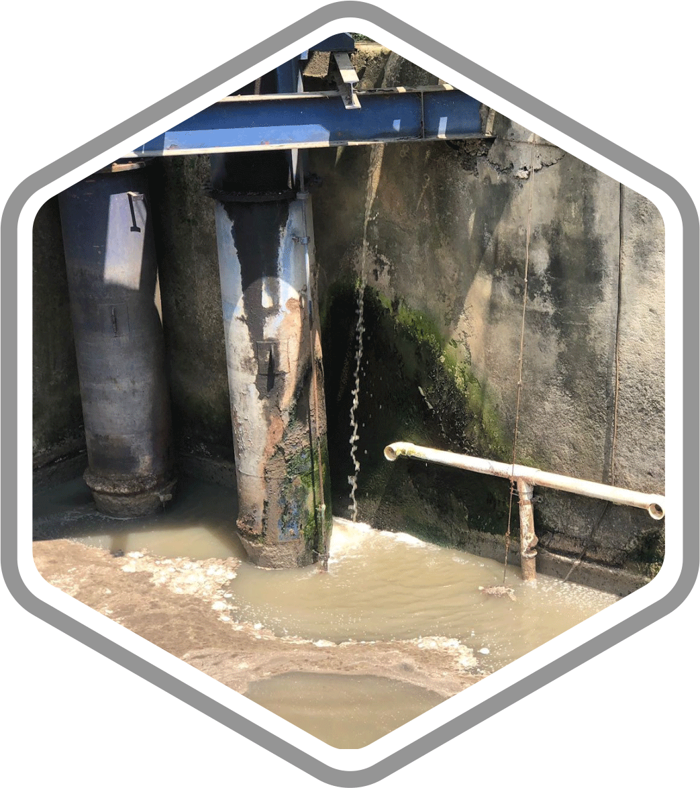
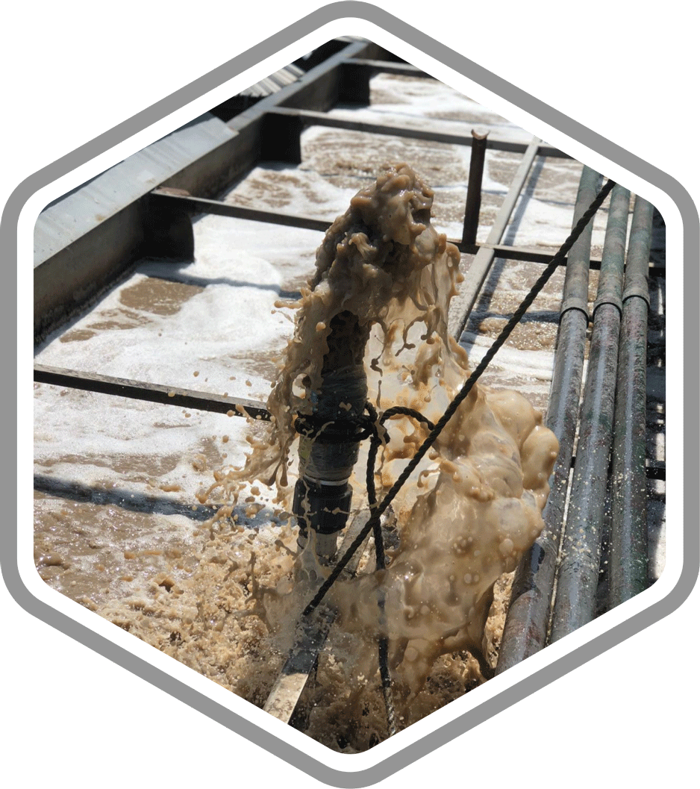

Conheça nossos benefícios para o Setor de Tratamento de Água
Encontre aqui os benefícios que você obterá ao instalar um dispositivo estruturador magnético Omnienvironment HDMR em estações de tratamento de água.Principais benefícios no Tratamento de Águas:
- ✔ Redução na quantidade de produtos químicos e insumos
- ✔ Tempos de acomodação mais curtos
- ✔ Níveis mais baixos de DBO e DQO
- ✔ Tempo de digestão do lodo
A recuperação e melhoria da água de processo constitui hoje um grande desafio ambiental para quase todas as empresas. A tecnologia OMNIENVIRO HDMR é uma ferramenta perfeita para atingir os níveis atualmente exigidos pelas autoridades ambientais de qualquer país.

Redução na quantidade de produtos químicos e insumos
Redução de doses de produtos químicos e insumos de 25% para 35% * Coagulantes, desinfetantes, dispersantes, reguladores e outros insumos interagindo de forma mais eficiente com a água rearranjada molecularmente.

Tempos de acomodação mais curtos
Redução dos tempos de sedimentação de lodos e partículas • Quando a água é reorganizada, sua tensão superficial diminui e, graças a isso, apresenta-se uma hidratação mais eficiente das partículas, levando a uma maior velocidade de sedimentação das partículas e permitindo com isso uma maior velocidade na separação e consequentemente na esclarecimento da água

Níveis mais baixos de DBO e DQO
Redução das demandas de oxigênio na água (DBO e DQO) • Tanto a demanda biológica de oxigênio (DBO) quanto sua demanda química (DQO) são talvez o ponto mais crítico para o cumprimento dos parâmetros exigidos pela norma. Graças ao fato de que ao recircular a água através de um Estruturador Magnético HDMR OMNIENVIRO aumenta-se a disponibilidade de oxigênio; melhorias significativas são alcançadas nestes parâmetros simplesmente realizando este processo na água.
Tempo de digestão do lodo
As lamas resultantes do processo de purificação da água numa estação de tratamento devem ser submetidas a um processo de digestão no qual estabilizam e reduzem o nível de odores e o potencial de contaminação. Tal processo também é beneficiado quando o meio hidratante é estruturado, pois haverá uma maior atividade no processo, o que permite reduzir os tempos de processo entre 25% a 30%.